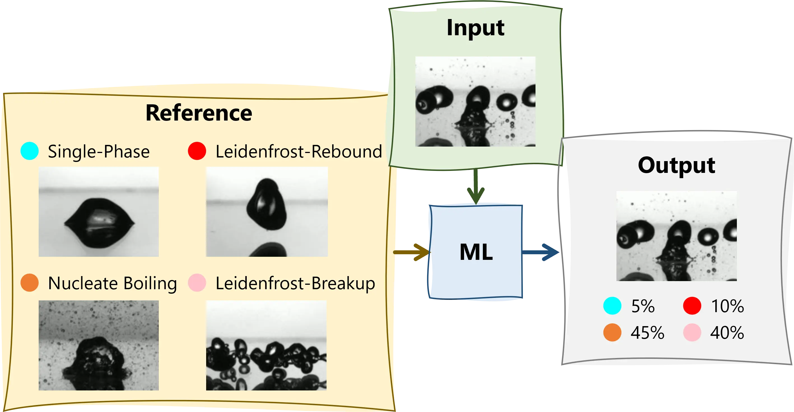

Department of Engineering, King's College London
Academic Advisor: Dr Yutaku Kita (yutaku.kita@kcl.ac.uk)
Driven by recent extreme heatwaves and shifting UK climate frameworks, this project investigates the viability of using residential rooftop solar PV to directly power domestic air conditioning (AC). The student will model the thermodynamic alignment between summer solar irradiance profiles and the cooling loads of a typical UK residential dwelling. The study will assess if peak solar generation removes the need for expensive battery storage or night-time grid reliance, factoring in the UK's unique, rapid evening temperature drops.
Solar microgeneration modeling, building transient heat load forecasting, Lifecycle Cost Analysis (LCCA), Net Present Value (NPV) calculation, and policy-level engineering strategy.
Solid understanding of solar thermal systems and building heat gains, paired with standard engineering economics knowledge.
As data centres transition from air to direct-to-chip liquid cooling to manage dense AI compute loads, infrastructure managers face immense financial and thermal trade-offs. The student will develop a system-level thermodynamic loop model of a facilities-level cooling system to analyze heat rejection rates and pumping penalties. The student will also explore the feasibility of emerging two-phase flow cooling (flow boiling, sprays).

Closed-loop thermodynamic cycle design, heat exchanger effectiveness evaluation ($\epsilon$-NTU), power usage effectiveness (PUE) mapping, and operational infrastructure asset management.
Advanced thermodynamics, heat transfer (convective heat transfer coefficients, fluid friction factors) and basic system modeling principles.
Wire Arc Additive Manufacturing (WAAM) enables the production of large-scale structural metal components. However, its economic viability is bottlenecked by process downtime. To prevent excessive heat accumulation and subsequent geometric distortion, previously deposited material must cool below a critical interlayer threshold before the next pass can begin. Under standard ambient air-cooling conditions, this waiting time can account for up to 90% of the total manufacturing cycle time, drastically inflating production costs.
This project uses computational simulation to model and evaluate advanced cooling strategies designed to mitigate this bottleneck. The student will develop a transient thermal finite element model of a multi-layer WAAM deposition process featuring a moving volumetric heat source. Using this numerical baseline, the student will evaluate and compare the thermal dissipation performance of standard natural convection (ambient air) against forced cooling techniques, specifically focusing on high-efficiency spray cooling. The spray cooling will be implemented by programming spatially and temporally varying convective heat transfer coefficients ($h$) that track behind the moving heat source.
Advanced transient finite element thermal modeling, implementation of moving heat sources, modeling of multiphase convective heat transfer coefficients ($h$), cycle-time estimation, and manufacturing production cost-benefit forecasting.
Strong foundations in transient conduction and forced convection heat transfer, and previous introductory exposure to FEA software environments.
The impingement of liquid droplets onto heated substrates is a foundational mechanism in high-flux two-phase cooling techniques such as spray cooling. The physical outcomes of these impacts depend on a complex parameter space, including fluid-solid thermophysical properties, droplet diameter, impact velocity, and initial surface temperature. Researchers traditionally map these outcomes onto a Weber number-versus-temperature phase diagram spanning distinct regimes: single-phase cooling, nucleate boiling, the Leidenfrost state, inertial breakup, and thermal atomisation. However, visual classification by human operators is inherently subjective, particularly near regime boundaries.
This project aims to develop an objective, machine learning-driven framework to automate and quantify regime identification. Utilizing an existing repository of high-speed experimental footage, the student will preprocess video frames to train a convolutional neural network (CNN) or a deep-learning video classifier. Rather than outputting a binary classification, the model will be designed to yield a probabilistic matching percentage (e.g., 70% nucleate boiling, 30% Leidenfrost) at transition boundaries. The final framework will process unseen experimental data to generate a quantitative, probability-contoured regime map.

Advanced computer vision, deep learning architecture implementation, image/video preprocessing pipelines, multi-class probabilistic classification, and the application of data science to multiphase thermofluid analysis.
Strong Python programming background (prior exposure to data science libraries like NumPy/Pandas is highly beneficial), a clear understanding of multiphase boiling curves (heat transfer), and basic knowledge of image processing.
When a liquid droplet impinges upon a heated solid surface, its hydrodynamic and thermal behaviors, ranging from nucleate boiling and splashing to the Leidenfrost state, are dictated by a complex interplay of kinetic, surface, and thermal energies. While substantial literature exists, the experimental datasets remain decentralised. The research group currently utilises a structured system of individual JSON files to store dataset variables (temperatures, velocities, Weber numbers, liquid types, and substrate properties) for individual papers, alongside a Python script to compile and map the results.
This postgraduate project focuses on scaling this existing infrastructure into a deployment-ready web application and expanding the data library. The student will write a data ingestion pipeline that aggregates the decentralized JSON files into a unified, queryable data framework. To streamline data expansion from new literature, the student will develop a semi-automated digitizing tool to extract data coordinates directly from published graphs and output them into the group's standardized JSON format. Finally, the student will build an interactive web-based dashboard using Streamlit/Plotly. Users will be able to filter by fluid-substrate combinations and dynamically select their axes (e.g., $We$ vs. $T$, or $Re$ vs. $T$) to generate custom droplet impact regime maps instantly.
Data engineering and serialization pipeline design (JSON manipulation), GUI/UX product development, software asset management, technical documentation and user guide writing, automated data harvesting/image digitization, and multi-variable thermodynamic system analysis.
Strong programming foundation in Python (specifically dictionary manipulation, file I/O, and plotting), literature survey and analysis, understanding of fluid mechanics and heat transfer, and an interest in clean software formatting.
This slot is reserved for highly motivated students who wish to pursue a specific research question, computational study, or software tool development of their own design. The proposed topic must align tightly with the supervisor’s core expertise in thermofluids, heat transfer, multi-phase flows, or thermal energy management.
To be mutually agreed upon during the scoping phase, adhering strictly to the department's assessment criteria.
The project must utilize existing institutional software licenses (Ansys, COMSOL, MATLAB) or open-source coding frameworks (Python). No bespoke hardware fabrication will be funded.
Dependent on the approved topic.
Dependent on the approved topic.